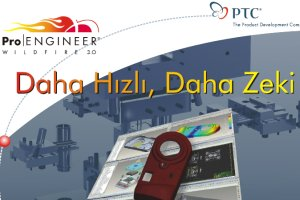

|
Pro/ENGINEER
Wildfire 3.0 kiþisel ve proses verimliliðinizi geliþtirir,
size ve ekibinize daha hýzlý ve zekice çalýþma imkaný tanýr.
Ýþte yüzlercesi arasýndan ilk 10 neden.
1.
Daha Hýzlý Montaj
Ürünleriniz daha karmaþýk ve kompleks hale geldikçe, montajlarýnýzý
daha kolay oluþturmak ve modifiye etmek için çeþitli araçlara
ihtiyaç duyarsýnýz. Þimdi Pro/ENGINEER Wildfire 3.0 sayesinde
komponentllerinizi 5 kat daha hýzlý montaj yapabileceksiniz.
Yeni 'multi-threaded assembly retrieval' özelliði ve Windows
64-bit OS desteði sayesinde, hem bilgiye daha hýzlý ulaþacak,
hem de daha yoðun bilgiyle çalýþabileceksiniz.
2.
Daha Hýzlý Teknik Resim
Þimdi teknik resimlerinizi 3D gerçek görünüþler (shaded views)
ekleyerek zengin-leþtirebilirsiniz. Bu görünüþler teknik resimdeki
çeþitli belirsizlikleri ortadan kal-dýrarak, dizayn konseptinizin
daha hýzlý anlaþýlmasýný saðlar. Bunun yanýnda Pro/ENGINEER
Wildfire 3.0, oklarý çevirmek, ölçüleri çakýþtýrmak ve görünüþleri
ölçeklemek gibi birçok sýkýcý operasyonunu otomatize ederek
teknik resim oluþtur-manýzý hýzlandýrýr. Dolayýsýyla önceki
Pro/ENGINEER versiyonlarýna göre % 60'a kadar daha hizlý imalat
resmi oluþturabileceksiniz.
3.
Daha Hýzlý 'Sketch"Sketching' iþ akýþý daha az menü seçimiyle yeniden dizayn
edildi. Böylelikle kolaylýkla sketch oluþturabilecek ve sketch
ortamýndan daha çabuk çýkabileceksiniz. Bu iyileþ-tirme sayesinde
toplam unsur oluþturma ve modifiye etme zamanýný azaltacaksýnýz.
Yeni 'sketcher palette' ile, yaygýn kullanýlan þekilleri daha
hýzlý seçebilecek ve yeniden kullanabileceksiniz. Bu sayede
standart kesitlerin oluþturulmasýnda % 55, kompleks kesitlerde
% 80'e varan performans artýþý göreceksiniz.
4.
Daha Hýzlý Sac Parça Modelleme
Modern, daha tutarlý kullanýcý arayüzü sayesinde saç parçalarý
daha kolay oluþturup, modifiye edebileceksiniz. Sac unsurlar
sizin dizayn amacýnýzý anlayacak ve uygun geometriyi oluþturmanýzý
saðlayacak. Örneðin; bir unsurda çoklu sac duvarlar oluþ-tururken
geometrinin üstüste binmesini engellemek için, Pro/ENGINEER
otomatik olarak 'miter cut' ekleyecek. Bu geliþmelerle birlikte,
sac unsurlarýnýzý % 90'a kadar daha hýzlý oluþturabilecek
ve toplam unsur sayýsýný % 90'a kadar azaltabileceksiniz.
5.
Daha Hýzlý CAM
Ýmalat (CAM) kullanýcý arayüzünü güncelleþtirildi. Böylece
Pro/ENGINEER ile CAM artýk daha sezgisel ve daha tutarlý.
Yeni, modern ve kullanýþlý 'Tool Manager' ile iþiniz için
doðru aracý bulmanýz ve kullanmanýz daha kolay. Bu yenilikler
iþinizi 3 kata kadar hýzlandýracak.
6.
Daha Akýllý Modeller
3D modellerin zekasý ve kapasitesinin arttýrýlmasý ile bir
çok prosesi kýsaltacak ya da elimine edeceksiniz. Kaliteyi
arttýracak ve ürün geliþtirme zamanýný azaltacaksýnýz. Örneðin;
3D teknik resim oluþturabilme size zaman kazandýracak ve son
ürünü görselleþtirmeyi de kolaylaþtýracak. 3D modelinize imal
edilebilirliði tesis etmek için, tercih edilen imalat proseslerinin
bilgisini ekleyebileceksiniz. Yeni 'Assembly Sense' teknolojisini
kullanarak, montaj talimatlarýnýza kurallar ve montaj mantýðý
ekleye-bileceksiniz. Örneðin ¼-20 lik standart deliðe yalnýzca
¼-20 lik civatalarý monte edebilecek bir tanýmlama yapabileceksiniz.
Bu teknoloji ile yalnýzca tasarýmlarýnýzýn birbirine uygunluðuna
deðil, ayný zamanda fonksiyonlarýný uygun þekilde yerine getireceklerine
emin olacaksýnýz.
7.
Daha Akýllý Paylaþým
Günümüzde birçok firma dizayn bilgisini partner ve tedarikçileri
ile paylaþmaya ihtiyaç duymakta, ancak 3. parti firmalarýn
kendi iç veritabanlarýna girmesini istememektedir. Sonuçta
modeller dýþarýdan alýnabilmeli ve deðiþiklikler daha sonra
asýl veritabaný ile baðdaþtýrýlmalýdýr. Bizim yeni taþýnabilir
iþ uzaylarýmýz (workspace) ile þimdi Pro/INTRALINK® ya da
Windchill® de depolanan dizayn verisini ve baðlý metadatayý
paylaþmak daha kolay. Partner ve tedarikçiler tüm deðiþikliklerin
takip edilebildiði taþýnabilir bir iþ uzayýnda güvenli çalýþabilirler.
Deðiþiklikleri veritabanýna yeniden iliþtirmek çok kolay.
Bu yetenek özellikle bir laptop ile ofisdýþý (offsite) çalýþýrken
çok kullanýþlý olmaktadýr.
8.
Mechanica Akýllý Proses Sihirbazý
Günümüzde Sonlu Elemanlar Analizi (FEA) uzmanlarý nadir bulunmaktadýr.
Tasarým mühendisleri ise genel olarak sonlu elemanlar analizlerini
yeterli uzmanlýkta ger-çekleþtirememektedirler. Sonuçta, tasarým
mühendisleri ya verimsiz bir proses takip edecekler ya da
bir FEA uzmanýnýn yardýmýný bekleyeceklerdir. FEA tecrübesi
olan personel ayrýldýðýnda firmalar pratik bilgilerini (best
practices) kaybedeceklerdir. Pro/ENGINEER Wildfire 3.0 yeni,
özelleþtirilebilir Proses Sihirbazýný sunar. Bu sayede firma
tecrübelerinizi kaydedebilecek, çeþitli prosesler ile ilgili
öneriler alabilecek ve bu pratikleri firma boyunca yayabileceksiniz.
Proses Sihirbazý mühendisleri analiz proseslerinde yönledirerek,
verimliliði geliþtirir ve tasarýmlarýnýzý önceden deðerle-menizi
mümkün kýlar.
9.
Daha Akýllý Sistemler Arasý Operasyonlar
Günümüzün mühendisleri ürün geliþtirme bilgisine kesintisiz
ve zamanýnda ulaþabilmeye ihtiyaç duyarlar. Pro/ENGINEER Wildfire
3.0 sayesinde Pro/ENGINEER ile Pro/INTRALINK ya da Windchill
arasýndaki operasyonlarý daha kolay yapabile-ceksiniz. Örneðin;
'bulk item' raporlama otomatize edildi. Ýndirilen veri modifiye
edildiði zaman otomatik olarak 'checkout' edilir, dolayýsýyla
siz yalnýzca ihtiyacýnýz olan veriyi 'checkout' edersiniz.
'Difference Report' özelliði ile daha detaylý deðiþiklik tarihçesi
elde edersiniz. Son olarak, model ürün aðacýna eklenen bir
kolon size herhangi bir modelin veritabanýndaki durumunu rapor
eder.
10.
Daha Kaliteli ve Üstün Teknik Destek
PTC yüksek kalitede ürünler sunmak sözünü yerine getirmeye
devam ediyor. Pro/ENGINEER Wildfire 3.0 þu ana kadar çýkmýþ
en yüksek kalitedeki versiyon ola-caktýr. Aktif bakýma sahip
müþterilerimiz bu versiyona otomatik olarak yükselecek, daha
kaliteli bir telefon desteði ile 'PTC Knowledge Database'
eriþimine sahip olacaklardýr.
Daha
fazla bilgi için: Ýnformatik
Bülten Mart 2006 (1,3MB PDF)
 Ýrtibat: Ýrtibat:
INFOMA GROUP
Informatik - InFomaDesign - SmartMeter - Arsay
Famas Plaza A-Blok Kat:3 Darülaceze Cad.
H.Z. Türkkan Sok.
Þiþli Ýstanbul
Tel: (212) 222 3235
www.infoma.biz
|